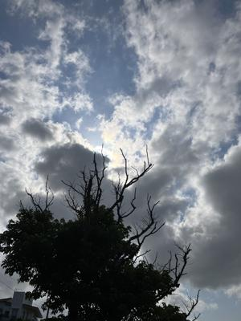
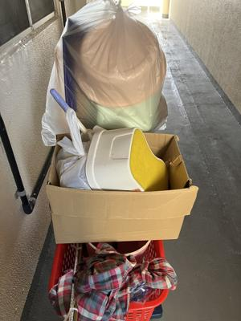
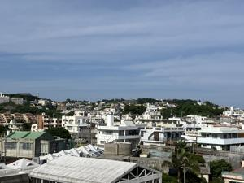
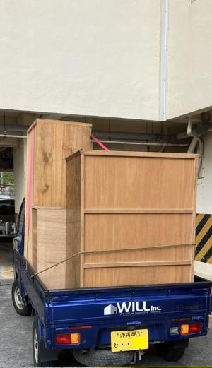
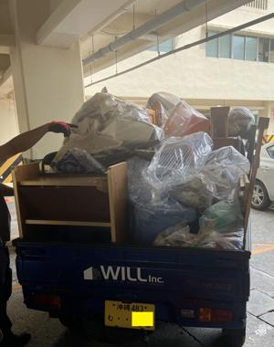

うるがいの話 ある日
最新: クリーンセンタで廃棄【うるがいの話 ある日】とは 一日だけのプログです
『うるがいの話』の最新一日だけのプログで、通信料が少なく経済的だ。カニの画像をクリックすると全ての日付が載る『うるがいの話』サイトを表示します
|
|
【うるがいの話】 うるがい(ｳﾙｶﾞｲ urugai)とは、『もずくがに』の名前でとても大きくなります。 |
|---|---|
|
|
【カミマヤーの話】 猫のことを方言でマヤーといいます。カミマヤー（kamimayaa）とは、神の猫のことです。 |
|
【たながぁの音楽】 たながぁ（ﾀﾅｶﾞｰ tanagaa）とは手長えびのことで、何種類かあり大きいのは車 エビぐらいになります。 |

|
【ぶながぁの話】 ぶながぁ(ﾌﾞﾅｶﾞｰ bunagaa)とは、赤い髪の毛、赤い身体、そして身長は１ｍ２０ｃｍ ぐらい、川の蟹を食べているの目撃された。場所は沖縄県国頭郡大宜味村のと ある村僕の隣近所に住んでいる爺さんから、聞いた話です。 |
|
|
【ギーマの話】 ギーマ(giima)とは、山原の里山に咲くスズランに似た、 花を付けます。実は食べられます、 気が付くと口の周りが紫になっています。 |
2025年05月01日 (木）クリーンセンタで廃棄
16:46

４月１９日（木） １６：２５ 最後の台車だったはずだが

マンションからみた東側の景色

小さい不動産の４名の職員の支援を受け、小型トラックにマンショ
ンの廃棄物を２回に分割して廃棄する。金額は、２，３４０円でし
た。
(1)粗大ごみ 16点（最終的には14点）
①洋服ダンス ３点 3
②鏡付きダンス １点 4
③テーブル ２点 6
④ソファー １点 7
--------->スプリングがあったので個別対応
⑤ベーッド １点 8
⑥ベーッドの下の収納タンス ２点 9
⑦本棚 １点10
⑧オマル １点11
⑨折りたたみ椅子 １点12
⑩カーテンレール １点13
⑪電子レンジ １点14
⑫ガスコンロ １点15
--------->忘れていた 後日３百円で対処
⑬空気清浄機 １点16（フロン無し）
(2)もやさないごみ ４袋
①食器の廃棄 皿（陶器・ガラス製） ２袋2
②ハンガー（金属製） １袋3
③その他 １袋4
(3)燃えるゴミ ３袋
②むしろ １点
③風呂 たらい １点
④大型ビニール容器 １点
１０時０８分 １回目の配送 １７０Kｇ、１，０２０円

１０時５６分 ２回目の配送 ２２０Kｇ、１，３２０円

なんと、午前中で運び終えた。ゴールデンウィークのせいか道もス
カスカ、２回目で受付するときクリーンセンタの受付のオジサンが
２回目のうるがいさんですよねと、名前で呼ばれビックリした。